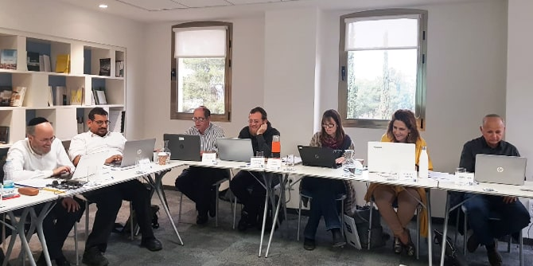

The Mandel graduate community was offered the opportunity to participate in a workshop that would introduce them to Wikipedia and other initiatives of the Wikimedia Foundation. The workshop was led by Shani Evenstein, a lecturer and researcher at the Jaime and Joan Constantiner School of Education and the Sackler Faculty of Medicine at Tel Aviv University, and a member of the board of directors of the international Wikimedia Foundation. An expert on the wisdom of crowds and free knowledge initiatives, Evenstein researches the use of Wikipedia and its sister initiatives as tools for education systems and higher education.
This event, held at the Mandel Graduate Unit, opened with a lecture titled “Changing the World in Our Slippers,” which focused on the initiatives of the Wikimedia Foundation, which works to develop and distribute free knowledge in a variety of languages. Participants were introduced to the core values of the global Wikimedia movement regarding knowledge dissemination and accessibility. They also learned about Wikimedia’s initiatives and activities to provide access to free knowledge in developing countries and to preserve cultural knowledge that is facing extinction.

Evenstein also described Wikimedia’s efforts to improve the quality and precision of knowledge by developing relations with educational and cultural institutions. These efforts aim to bring the expertise and experience accumulated by these bodies to Wikipedia. She also presented the Wikimedia Foundation’s educational enterprises in Israel and around the world, its scientific and medical initiatives, its women’s initiatives, and more.
Founded in 2001, Wikipedia is the largest encyclopedia ever created, and it is based entirely on the work of volunteers who are committed to upholding pre-defined rules. Intelligent use of this encyclopedia can give Mandel graduates access to a huge source of knowledge and to a series of advanced learning and teaching processes that have not yet been introduced into schools and higher education institutions in Israel and around the world.
Following the lecture, the participants took part in a workshop on skills and rules for creating knowledge on Wikipedia, which included a hands-on exercise. The event concluded with a second lecture by Evenstein, this time on WikiData – a global database containing structured and linked data, which can be used as a platform to encourage new forms of learning, to support research, and to present data visually.
The workshop was created and facilitated by
Sharona Bar-Nes, senior staff member at the Mandel Graduate Unit.
{kind=link}